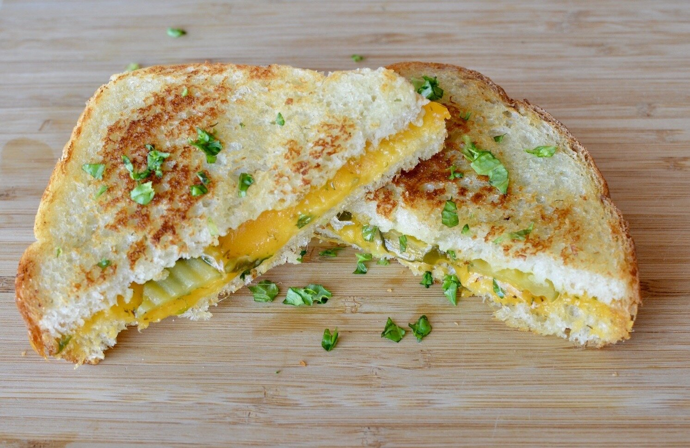

Quick and Easy Grilled Cheese

This grilled cheese is easy to make and very delicious!
This delicious recipe is a fresh take on an American classic.
Everyone loves a good grilled cheese, but not everyone has the time to make it.
The good news is, with this recipe, you can make this wonderful sandwich in just minutes!
The best part? With just a few more ingredients, we will level up your grilled cheese.
Still so easy!
Ingredients
- 1 tablespoon butter, softened
- 2 slices bread
- 2 slices sharp cheddar cheese
- 1 tablespoon chopped parsley
- 1 teaspoon chopped basil
- 1 teaspoon oregano
- 1 teaspoon chopped fresh rosemary
- 1 teaspoon chopped fresh dill
Steps
- Spread 1/2 tablespoon of butter on each side of each piece of bread
- Lie slices of Cheddar on one of slices of bread, on unbuttered side
- Sprinkle parsley, basil, oregano, rosemary, and dill on other slice's unbuttered side
- Sandwich the two slices of bread together with the buttered sides facing outwards
- Heat a skillet over medium heat
- When skillet is hot, gently lie sandwich on the skillet
- Cook on each side for 3 minutes until cheese has melted